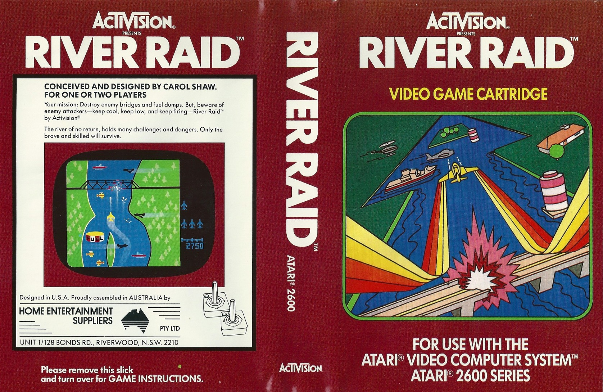

Carol Swan é uma engenheira computacional americana, reconhecida por ser a primeira mulher a desenvolver um game de modo profissional, gerando grande impacto na época.
Formada em ciências da computação pela universidade de Berkeley, nascida no Vale do Silício, Palo Alto, Califórnia, Carol se tronou a primeira programadora de um game. Seu primeiro game era um simples jogo da velha chamado 3D Tic-Tac-Toe mas que contribuiu que outras mulheres entrassem no ramo tecnológico.
Seu jogo de maior sucesso foi River Raid, o jogo tem como objetivo destruir os inimigos no percurso do rio com um jato.
Assim, devido ao grande sucesso do jogo, Carol Shaw pode se aposentar nos anos 90 para fazer trabalhos voluntários que tivessem relação com a tecnologia. Em 2017, Swawn recebeu o prêmio Industry Icon Award no Game Awards, solidificando sua contribuição no mundo dos jogos.
Fonte: https://jornaldeitu.com.br/2022/03/10/quem-e-carol-shaw-semana-da-mulher/